Bien utiliser SIGR en tant qu'administrateur
Ce guide présente pas à pas l'utilisation complète de l'application SIGR : connexion, tableau de bord, paramétrage de la Configuration (structures, unités, profils, agents), puis les modules métier — Formalisation du risque, Évaluations, Mitigation, Audit et Cartographie des risques. L'administrateur général dispose d'un accès complet à l'ensemble de ces modules.
Se connecter à la plateforme
Le SIGR (Système Intégré de Gestion des Risques) est accessible via un navigateur web. Cette section explique comment se connecter à votre espace de travail.
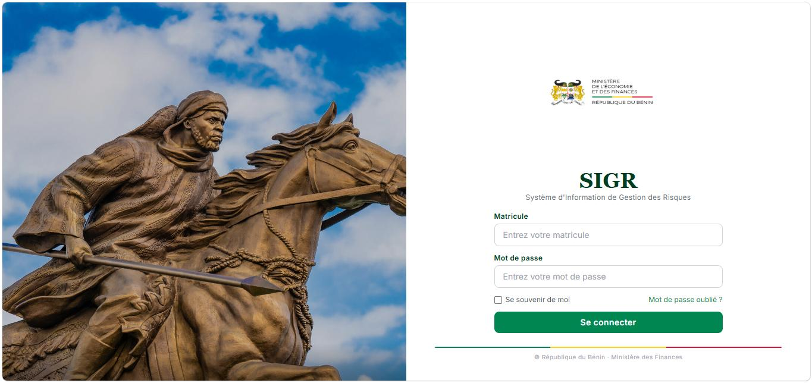
Pour se connecter :
- Ouvrez votre navigateur et rendez-vous sur la page de connexion du SIGR à travers l'URL.
- Saisissez votre matricule dans le champ « Matricule ».
- Saisissez votre mot de passe dans le champ « Mot de passe ».
- Cochez la case « Se souvenir de moi » si vous souhaitez que l'application mémorise votre connexion sur cet ordinateur.
- Cliquez sur le bouton vert « Se connecter ».
Le tableau de bord
Une fois connecté, vous arrivez automatiquement sur le Tableau de bord. C'est la page d'accueil de l'application : elle vous donne une vue d'ensemble de la gestion des risques du ministère.
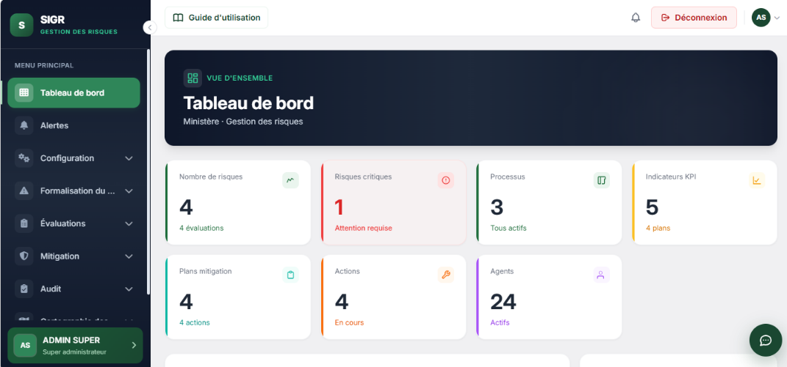
2.2. Synthèse des indicateurs clés
La partie centrale affiche des indicateurs chiffrés qui donnent un aperçu rapide de la situation :
- Nombre de risques : total des risques enregistrés et nombre d'évaluations réalisées.
- Risques critiques : nombre de risques nécessitant une attention particulière.
- Processus : nombre de processus actifs suivis par l'application.
- Indicateurs KPI : nombre d'indicateurs de réalisation et de plans associés.
- Plans de mitigation : nombre de plans en place et d'actions associées.
- Actions : nombre d'actions en cours de traitement.
- Agents : nombre d'agents actifs sur la plateforme.
En bas de page, un graphique présente les risques identifiés par processus, et un flux « Activités récentes » liste les dernières actions effectuées sur le système.
Ministères
Le menu « Configuration » regroupe les paramètres de base de l'application. La première rubrique, « Structures », permet de gérer la liste des ministères enregistrés dans le SIGR.
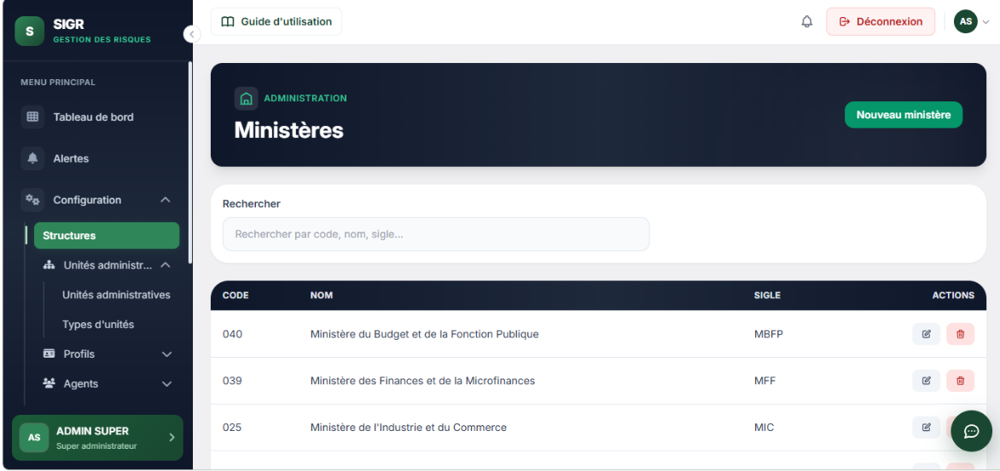
Structures)">Menu principal / Configuration / Structures — sur cette page, vous retrouvez, pour chaque ministère : son code, son nom complet, son sigle et le nom de l'utilisateur qui l'a créé.
3.1. Ajouter un nouveau ministère
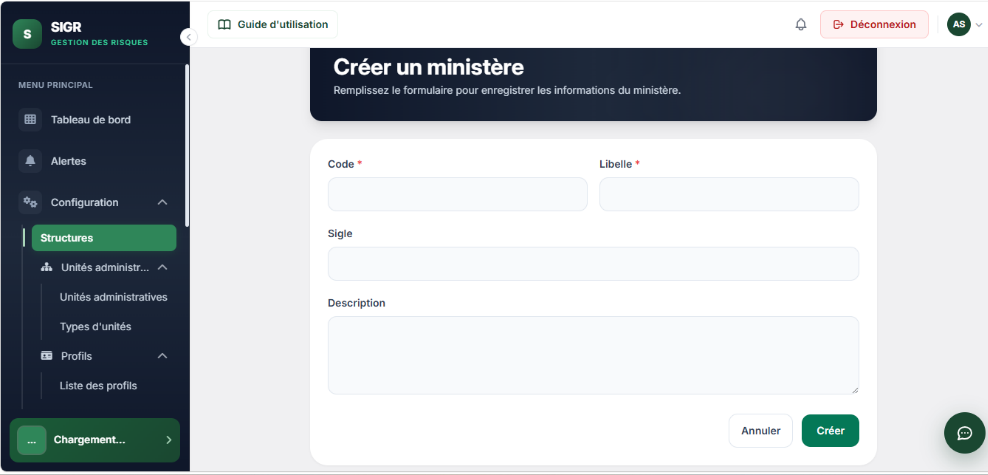
- Cliquez sur le bouton vert « Nouveau ministère » en haut à droite.
- Renseignez les informations demandées (code, nom, sigle).
- Validez pour enregistrer le nouveau ministère dans la liste.
3.2. Modifier ou supprimer un ministère
Dans la colonne « Actions », à droite de chaque ligne, deux icônes sont disponibles : l'icône crayon permet de modifier les informations du ministère, l'icône corbeille permet de le supprimer.
Types d'unités
Les « types d'unités » définissent les catégories auxquelles peuvent appartenir les unités administratives (par exemple : Direction générale, Direction opérationnelle). Ils sont utilisés lors de la création d'une unité administrative.
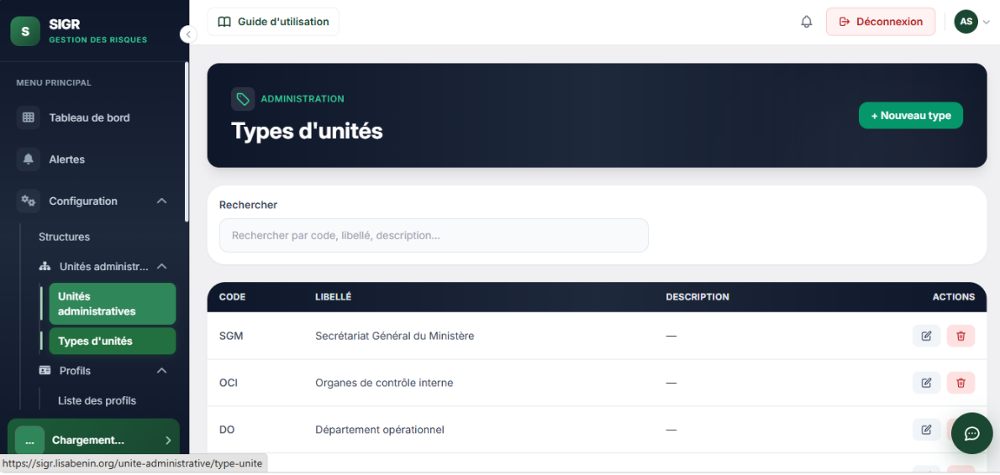
Menu principal / Configuration / Unités administratives / Types d'unités — la liste affiche, pour chaque type : son code, son libellé, une description explicative et le nom du créateur.
4.1. Ajouter un nouveau type d'unité
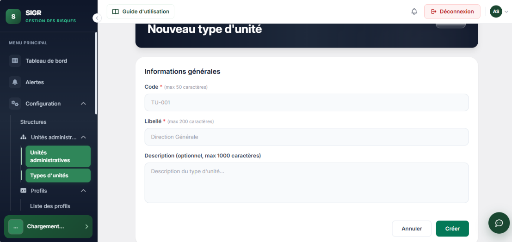
- Cliquez sur le bouton vert « + Nouveau type » en haut à droite.
- Renseignez le code, le libellé et une description claire du type d'unité.
- Validez pour l'ajouter à la liste.
4.2. Modifier ou supprimer un type d'unité
Utilisez, comme précédemment, les icônes crayon et corbeille dans la colonne « Actions » pour modifier ou supprimer un type d'unité existant.
Unités administratives
Chaque ministère est organisé en unités administratives (directions générales, directions opérationnelles, etc.). Cette section du SIGR permet de gérer ces unités.
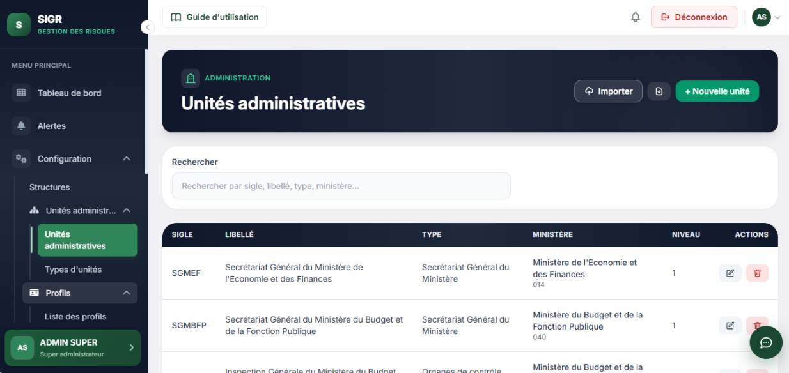
Menu principal / Configuration / Unités administratives / Unités administratives — la liste affiche, pour chaque unité : son code, son libellé, son type, le ministère de rattachement et son niveau hiérarchique.
5.1. Filtrer les unités
En haut de la page, le menu déroulant « Filtrer par unité parent » permet d'afficher uniquement les unités rattachées à une unité parente précise, au lieu de la liste complète.
5.2. Ajouter une nouvelle unité
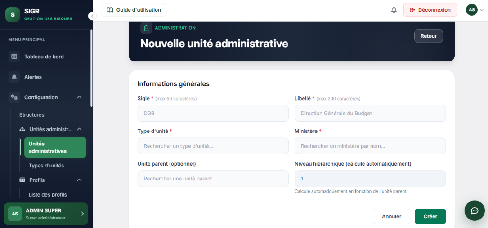
- Cliquez sur le bouton vert « + Nouvelle unité » en haut à droite.
- Renseignez le code, le libellé, le type d'unité et le ministère de rattachement.
- Validez pour créer l'unité.
5.3. Modifier ou supprimer une unité
Comme pour les ministères, les icônes crayon et corbeille dans la colonne « Actions » permettent respectivement de modifier ou de supprimer une unité administrative.
Profils
Les profils définissent les fonctions ou rôles métiers qui peuvent être attribués aux agents (par exemple : Directeur de l'Informatique, Chef de service). Ils sont ensuite associés aux agents lors de leur création.
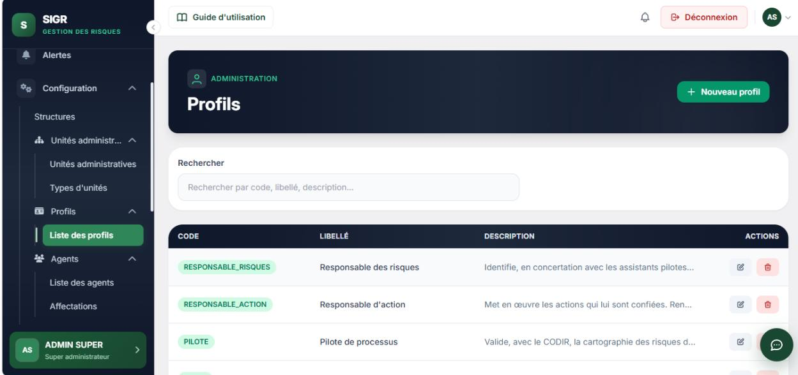
Menu principal / Configuration / Profils / Liste des profils — la liste affiche, pour chaque profil : son code, son libellé et une description facultative.
6.1. Ajouter un nouveau profil
- Cliquez sur le bouton vert « + Nouveau profil » en haut à droite.
- Renseignez le code et le libellé du profil, ainsi qu'une description si nécessaire.
- Validez pour enregistrer le nouveau profil.
6.2. Modifier ou supprimer un profil
Comme pour les autres listes, les icônes crayon et corbeille dans la colonne « Actions » permettent de modifier ou de supprimer un profil existant.
Agents
Les agents sont les utilisateurs du SIGR : chaque personne amenée à se connecter à l'application doit être enregistrée comme agent, avec un matricule, un rôle et un profil.
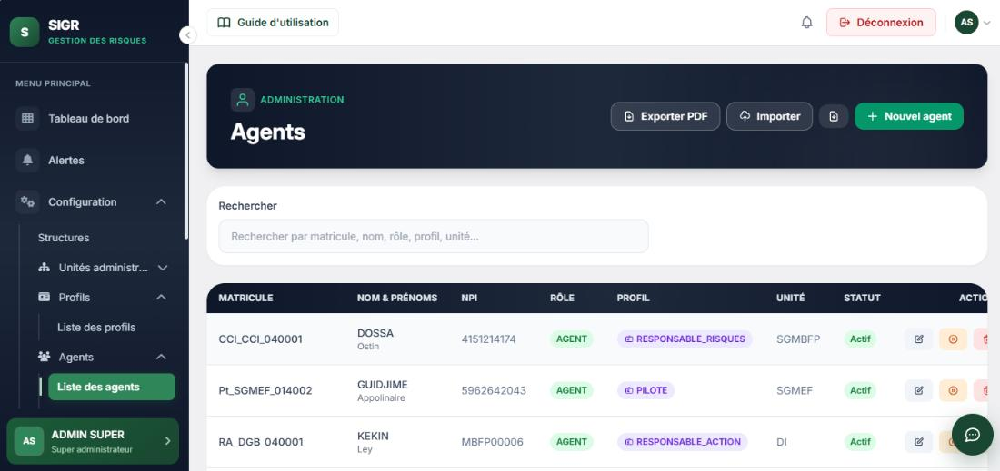
Menu principal / Configuration / Agents / Liste des agents — la liste affiche, pour chaque agent : son matricule, son nom et prénoms, son NPI, son rôle (Manager, Admin…), son profil, son unité de rattachement et son statut (Actif ou non).
7.1. Filtrer les agents
En haut de la page, deux menus déroulants permettent de filtrer la liste : « Filtrer par unité » et « Filtrer par rôle ».
7.2. Ajouter un nouvel agent
- Cliquez sur le bouton vert « + Nouvel agent » en haut à droite.
- Renseignez le matricule, le nom et prénoms, le NPI, le rôle, le profil et l'unité de l'agent.
- Validez pour créer l'agent.
7.3. Modifier, désactiver ou supprimer un agent
Dans la colonne « Actions », trois icônes sont disponibles pour chaque agent :
- L'icône crayon permet de modifier les informations de l'agent.
- L'icône orange permet de désactiver (ou réactiver) le compte de l'agent, sans le supprimer.
- L'icône corbeille permet de supprimer définitivement l'agent.
Affectations
Une affectation relie un agent à une unité administrative et à un poste précis, sur une période donnée (date de début et date de fin). Elle permet de conserver l'historique des postes occupés par chaque agent.
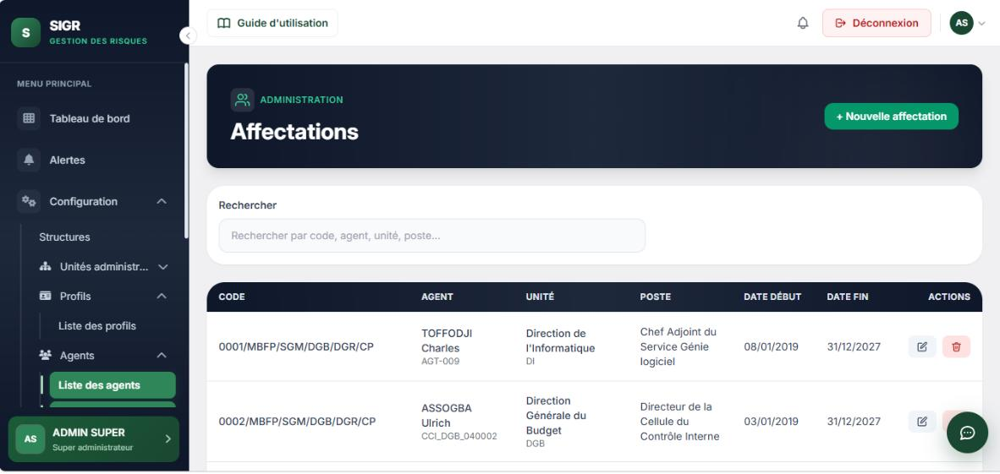
Menu principal / Configuration / Agents / Affectations — la liste affiche, pour chaque affectation : son code, l'agent concerné, l'unité de rattachement, le poste occupé, ainsi que les dates de début et de fin.
8.1. Ajouter une nouvelle affectation
- Cliquez sur le bouton vert « + Nouvelle affectation » en haut à droite.
- Sélectionnez l'agent, l'unité administrative et le poste concernés.
- Renseignez la date de début et, si elle est déjà connue, la date de fin.
- Validez pour enregistrer l'affectation.
8.2. Modifier ou supprimer une affectation
Les icônes crayon et corbeille dans la colonne « Actions » permettent respectivement de modifier ou de supprimer une affectation existante.
Unités de mesure
Les unités de mesure définissent la façon dont sont exprimées certaines valeurs dans l'application (scores, pourcentages, durées, quantités, montants...). Elles servent notamment de référence pour le paramétrage des indicateurs.
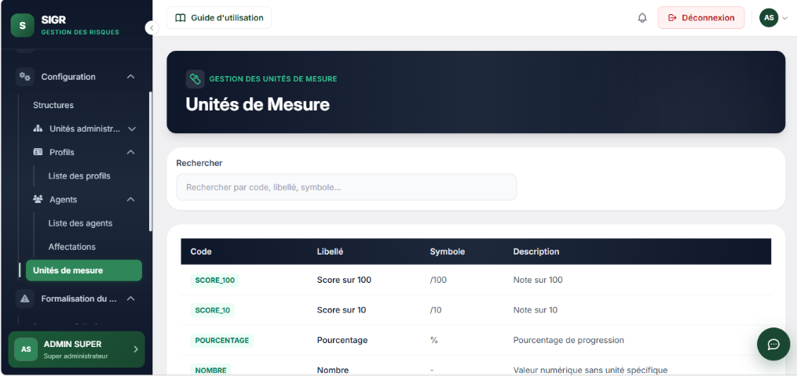
Unités de mesure)">Menu principal / Configuration / Unités de mesure — la liste affiche, pour chaque unité de mesure, son code, son libellé, son symbole et une description.
↑ Retour au sommaireProcessus
Le module « Formalisation du risque » permet de décrire les processus métiers de l'organisation ainsi que les risques qui leur sont associés. La rubrique « Processus » liste l'ensemble des processus enregistrés.
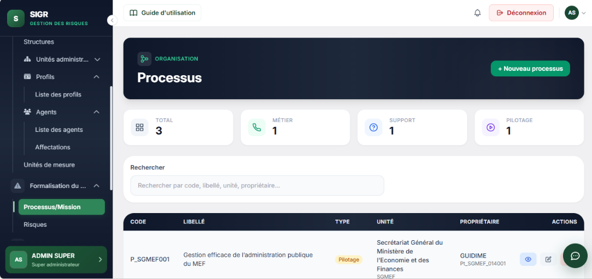
Processus)">Menu principal / Formalisation du risque / Processus — en haut de la page, des compteurs indiquent le nombre total de processus ainsi que leur répartition par type (Métier, Support, Pilotage). Le filtre « Filtrer par unité administrative » permet d'afficher uniquement les processus d'une unité donnée.
La liste affiche, pour chaque processus, son code, son libellé, son type, l'unité administrative de rattachement et son propriétaire. Dans la colonne « Actions », trois icônes permettent de consulter (œil), modifier (crayon) ou supprimer (corbeille) un processus.
10.1. Ajouter un nouveau processus
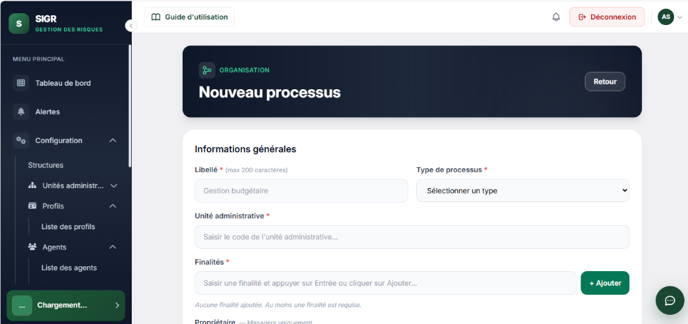
- Cliquez sur le bouton vert « + Nouveau processus » en haut à droite.
- Renseignez le libellé du processus (200 caractères maximum) et sélectionnez son type.
- Indiquez le code de l'unité administrative de rattachement.
- Ajoutez au moins une finalité : saisissez le texte puis appuyez sur Entrée ou cliquez sur « + Ajouter ». Vous pouvez répéter l'opération pour ajouter plusieurs finalités.
- Si nécessaire, sélectionnez un propriétaire parmi les managers (champ optionnel).
- Cliquez sur « Créer » pour enregistrer le processus.
Risques
Une fois les processus définis, chaque risque identifié doit être rattaché à l'un d'entre eux. La rubrique « Risques » permet de consulter et de gérer l'ensemble des risques formalisés.
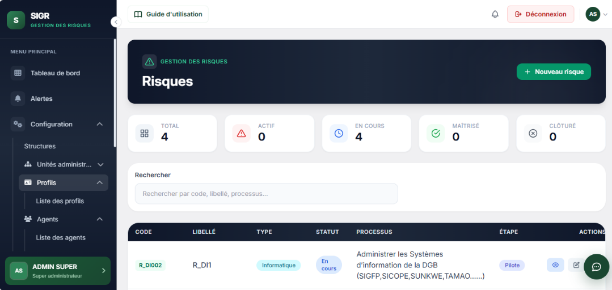
Risques)">Menu principal / Formalisation du risque / Risques — en haut de la page, des compteurs indiquent le nombre total de risques ainsi que leur répartition selon leur statut (Actif, En cours, Maîtrisé, Clôturé). Le filtre « Filtrer par processus » permet d'afficher uniquement les risques liés à un processus donné.
11.1. Ajouter un nouveau risque
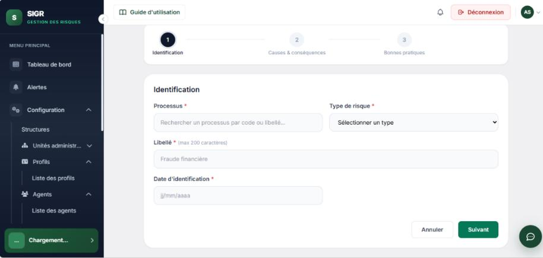
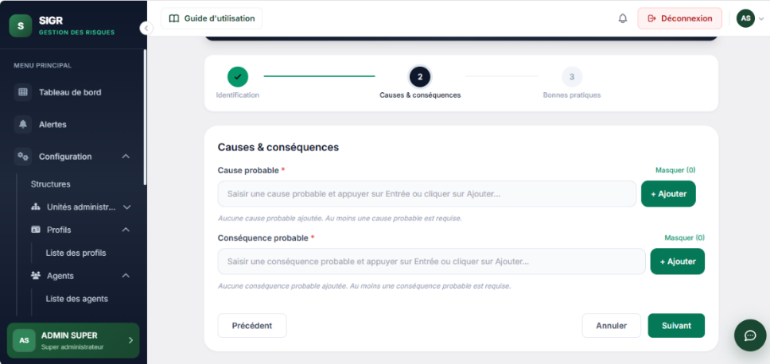
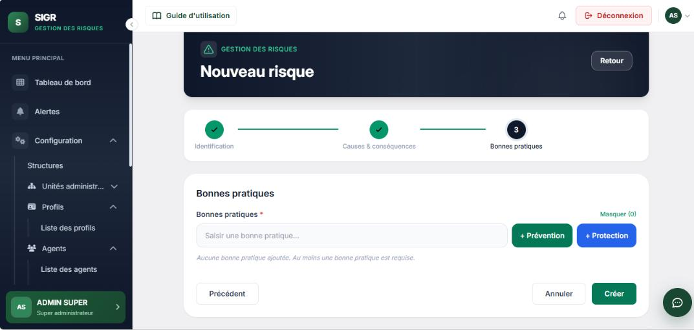
- Cliquez sur « + Nouveau risque ».
- Sélectionnez le processus concerné et le type de risque.
- Si besoin, associez le risque à une cartographie existante (champ optionnel).
- Saisissez le libellé du risque (200 caractères maximum) ainsi que sa date d'identification et son statut.
- Ajoutez les causes probables et les conséquences probables, en saisissant le texte puis en cliquant sur « + Ajouter ».
- Ajoutez les bonnes pratiques, en précisant s'il s'agit d'une bonne pratique de « Prévention » ou de « Protection ».
- Cliquez sur « Créer » pour enregistrer le risque.
Gestion des évaluations
Chaque risque formalisé doit être évalué afin de déterminer son niveau de criticité. La rubrique « Évaluations » permet de consulter les évaluations réalisées et d'en créer de nouvelles.
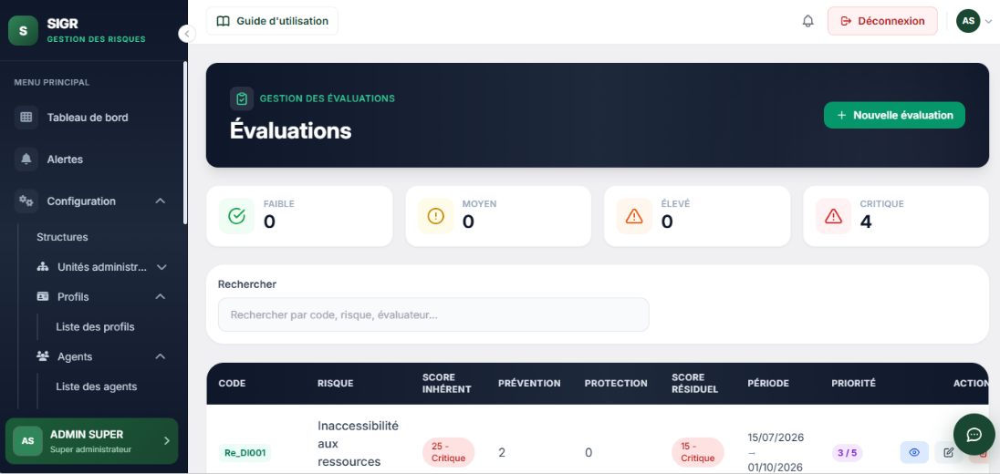
Menu principal / Évaluations — en haut de la page, des compteurs indiquent le nombre d'évaluations par niveau de criticité : Faible, Moyen, Élevé, Critique. La liste affiche, pour chaque évaluation, son code, le risque concerné, le score inhérent, les scores de prévention et de protection, le score résiduel, la période d'évaluation, la priorité et l'agent évaluateur.
12.1. Ajouter une nouvelle évaluation
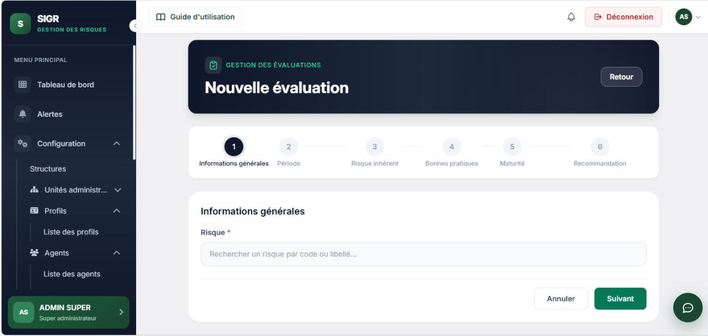
En haut du formulaire, un encadré rappelle l'échelle d'évaluation utilisée : l'impact et la probabilité sont notés de 1 à 5, la prévention et la protection de 0 à 3, et le score inhérent (impact × probabilité) permet de classer le risque en Faible (1-7), Moyen (8-14) ou Élevé (15-25).
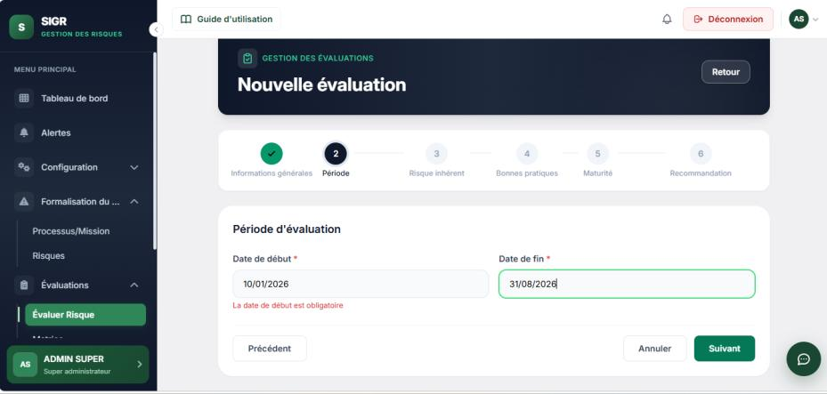
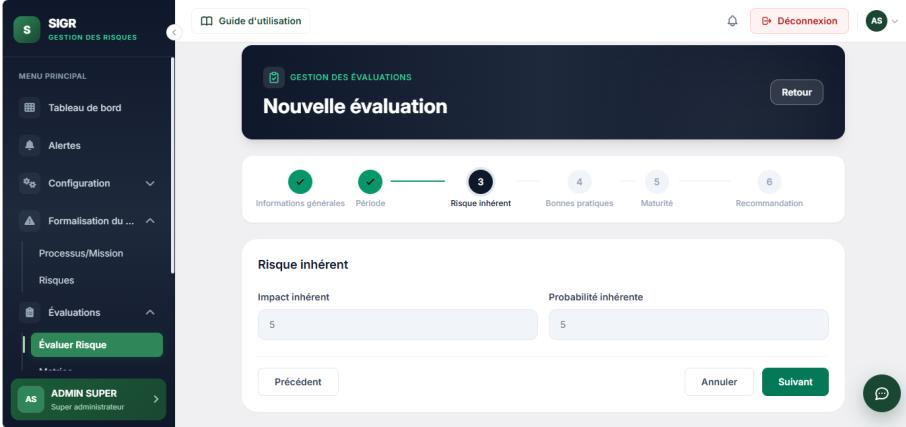
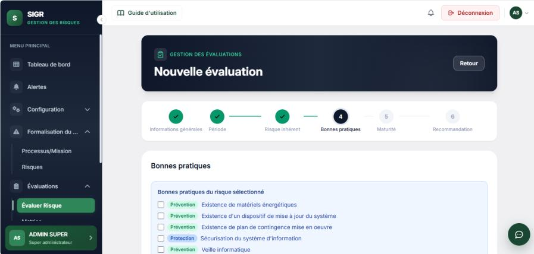
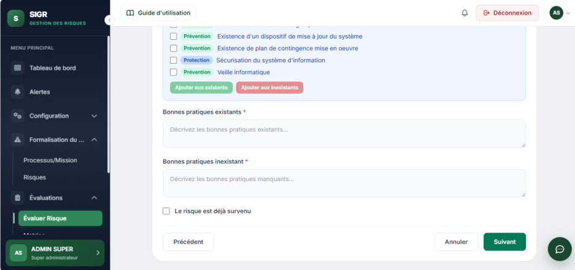
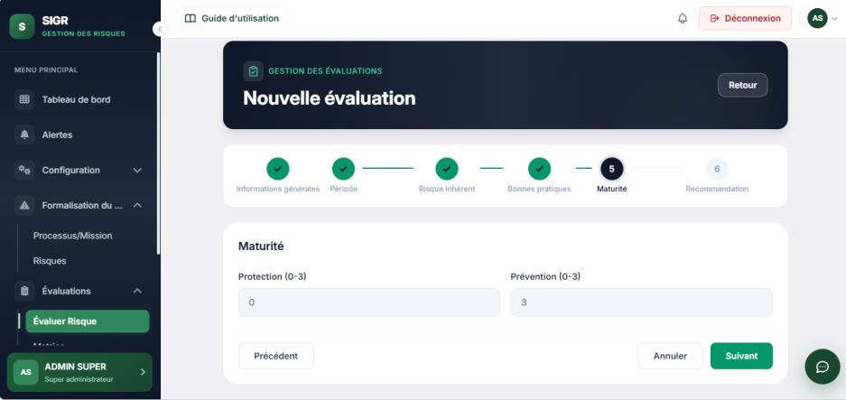
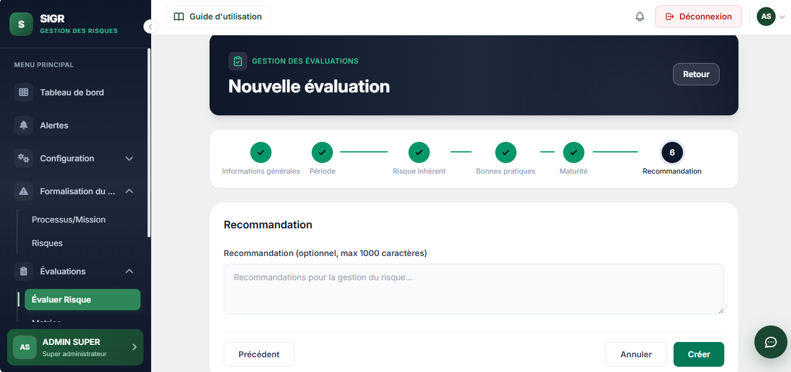
- Sélectionnez le risque à évaluer et, si besoin, l'agent évaluateur (champ optionnel).
- Renseignez la période d'évaluation (date de début et date de fin, toutes deux optionnelles).
- Indiquez l'impact inhérent et la probabilité inhérente du risque.
- Décrivez les bonnes pratiques existantes ainsi que les bonnes pratiques manquantes. Si le risque s'est déjà réalisé, cochez la case « Le risque est déjà survenu ».
- Renseignez, si besoin, les scores de protection et de prévention (0 à 3).
- Ajoutez, si nécessaire, une recommandation (1000 caractères maximum).
- Cliquez sur « Créer » pour enregistrer l'évaluation.
Matrice des risques
La matrice des risques offre une visualisation synthétique du niveau de criticité de l'ensemble des risques évalués, en croisant leur impact et leur probabilité.
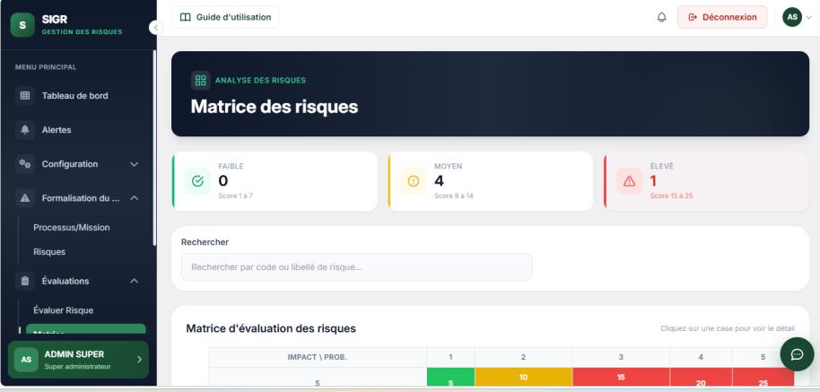
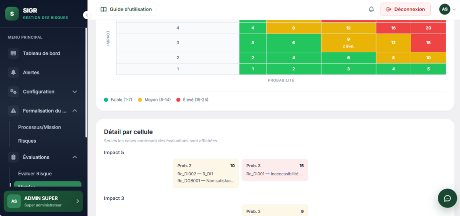
Menu principal / Cartographie des risques / Matrice des risques — en haut de la page, des compteurs indiquent le nombre d'évaluations par niveau de criticité : Faible (score de 1 à 7), Moyen (score de 8 à 14) et Élevé (score de 15 à 25).
La matrice croise, en lignes, l'impact (de 1 à 5) et, en colonnes, la probabilité (de 1 à 5). Chaque case affiche le score correspondant (impact × probabilité) et, le cas échéant, le nombre d'évaluations qui s'y trouvent. Les couleurs vert, jaune et rouge permettent d'identifier rapidement le niveau de criticité de chaque case, selon la légende affichée sous la matrice.
13.1. Consulter le détail d'une case
- Cliquez sur une case de la matrice contenant des évaluations.
La section « Détail par cellule » affiche alors la liste des évaluations correspondant à ce couple impact/probabilité, avec le code et le libellé résumé de chaque risque concerné.
Plans de mitigation
Un plan de mitigation regroupe les actions mises en place pour traiter un risque donné. La rubrique « Plans de Mitigation » permet de consulter et de gérer l'ensemble de ces plans.
Menu principal / Mitigation / Plans de Mitigation — en haut de la page, des compteurs indiquent le nombre de plans selon leur statut : Planifié, En cours, Terminé, Annulé. Chaque plan est présenté sous forme de fiche affichant son code, son statut, sa description, le risque auquel il est rattaché et sa date de création. Les icônes « Voir », modifier (crayon) et supprimer (corbeille) permettent de gérer chaque plan.
14.1. Ajouter un nouveau plan de mitigation
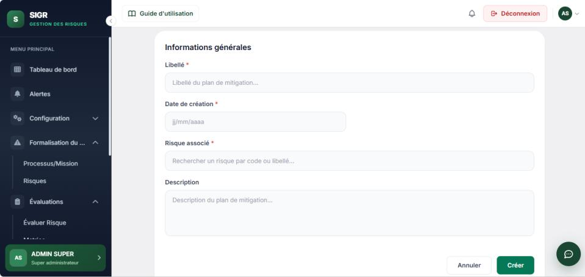
- Cliquez sur le bouton vert « + Nouveau plan » en haut à droite.
- Saisissez le libellé du plan et sélectionnez son statut.
- Indiquez la date de création et sélectionnez le risque associé.
- Ajoutez, si besoin, une description du plan.
- Cliquez sur « Créer » pour enregistrer le plan de mitigation.
Actions
Chaque plan de mitigation se décline en actions concrètes à mettre en œuvre. La rubrique « Actions » permet de consulter et de gérer ces actions.
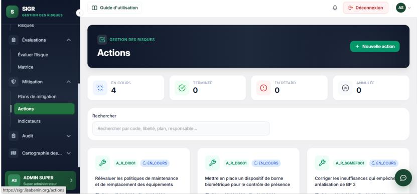
Actions)">Menu principal / Mitigation / Actions — le filtre « Filtrer par plan de mitigation » permet d'afficher uniquement les actions d'un plan donné. Des compteurs indiquent le nombre d'actions par statut : En cours, Terminée, En retard, Annulée. Chaque action est présentée sous forme de fiche affichant son code, son statut, son libellé, ses dates de début et de fin, le plan de mitigation associé et le responsable désigné.
15.1. Ajouter une nouvelle action
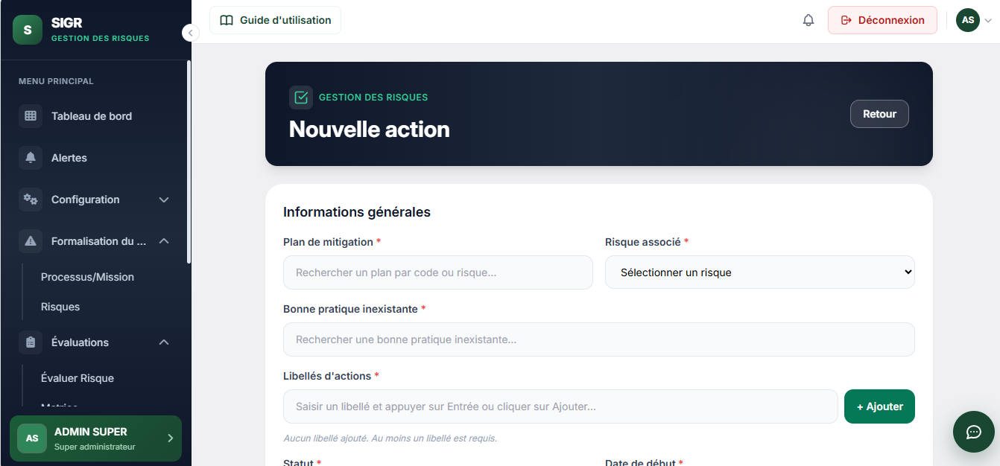
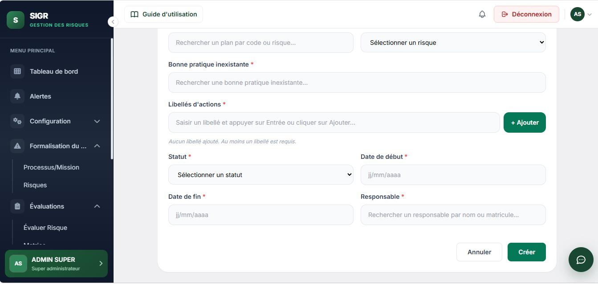
- Cliquez sur « + Nouvelle action ».
- Sélectionnez le plan de mitigation et le risque associé.
- Sélectionnez la bonne pratique inexistante liée à l'action.
- Ajoutez un libellé d'action : saisissez le texte puis appuyez sur Entrée ou cliquez sur « + Ajouter ».
- Sélectionnez le statut de l'action et renseignez ses dates de début et de fin.
- Sélectionnez le responsable de l'action.
- Cliquez sur « Créer » pour enregistrer l'action.
Indicateurs de réalisation
Cette page permet de suivre les indicateurs de réalisation (KPI) mis en place dans le cadre des plans de mitigation, et de visualiser leur évolution par rapport aux cibles fixées.
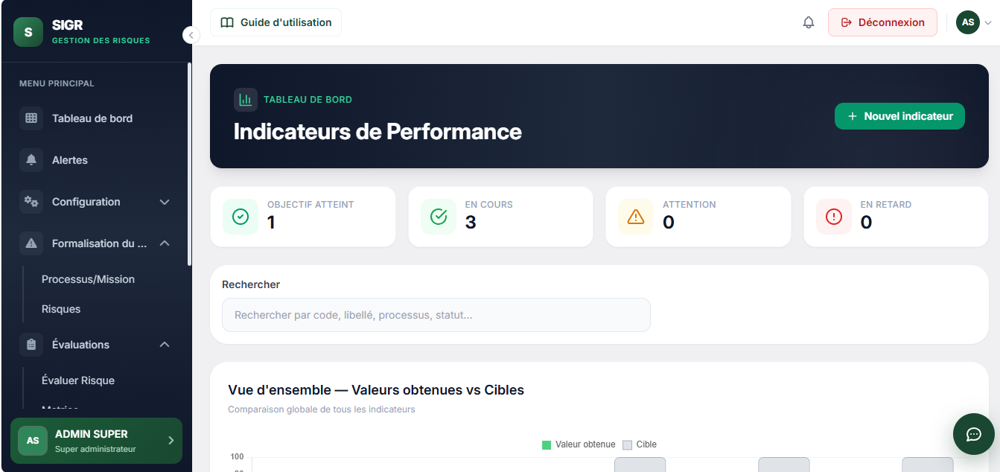
Menu principal / Tableau de bord / Indicateurs de Réalisation — en haut de la page, des compteurs indiquent le nombre d'indicateurs selon leur statut : En cours, Attention, En retard, Non disponible. Le graphique « Vue d'ensemble » compare, pour chaque indicateur, la valeur obtenue et la cible fixée.
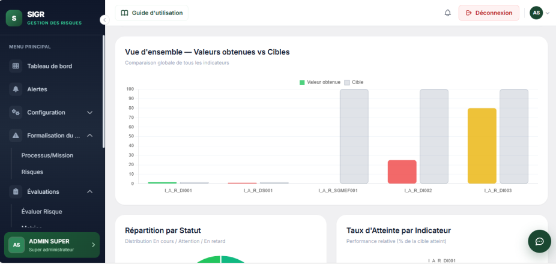
Deux graphiques complètent la vue d'ensemble : la « Répartition par Statut », qui montre la proportion d'indicateurs par statut, et le « Taux d'Atteinte par Indicateur », qui affiche la performance relative de chaque indicateur par rapport à sa cible.
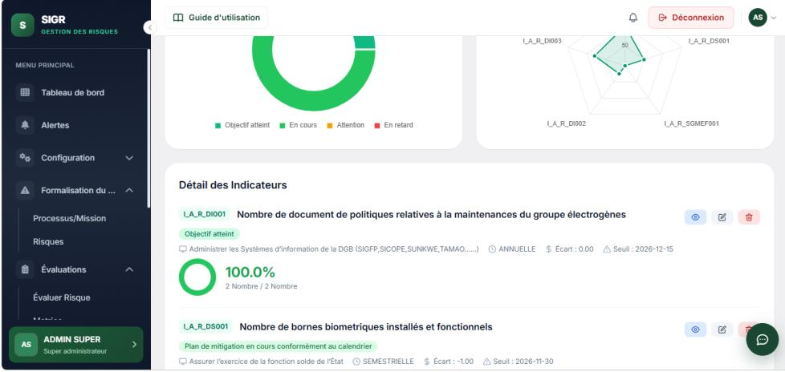
La section « Détail des Indicateurs » liste chaque indicateur avec son code, son libellé, le plan de mitigation associé, le processus concerné, sa fréquence de suivi (annuelle, trimestrielle...), son écart par rapport à la cible, son seuil et son taux d'atteinte représenté sous forme de jauge circulaire. Les icônes permettent de consulter, modifier ou supprimer un indicateur.
Ajouter un indicateur
- Cliquez sur « + Nouvel indicateur ».
- Entrez le libellé de l'indicateur, la fréquence, le processus, le risque, le plan de mitigation, l'action, l'unité de mesure.
- Renseignez les dates de début et de fin et la date du seuil d'alerte.
- Renseignez les valeurs cibles et les valeurs obtenues.
- Cliquez sur « Créer » pour enregistrer l'indicateur.
Plans d'audit
Un plan d'audit permet de planifier la vérification d'un risque et des dispositifs de maîtrise associés. La rubrique « Plans d'audit » permet de consulter et de gérer ces plans.
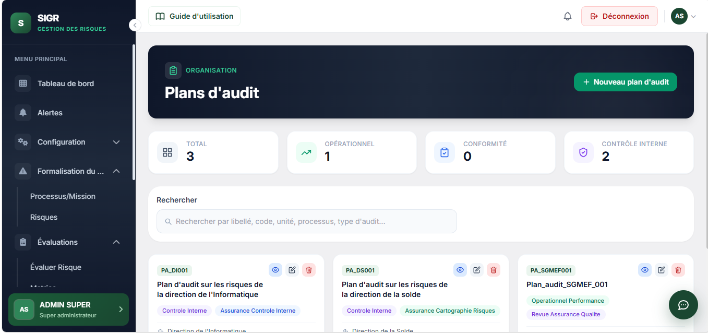
Plans d'audit)">Menu principal / Audit / Plans d'audit — en haut de la page, des compteurs indiquent le nombre total de plans d'audit ainsi que leur répartition par type (Opérationnel, Conformité, Contrôle interne). Les filtres « Recherche », « Unité administrative » et « Audit proposé » permettent d'affiner la liste.
Chaque plan est présenté sous forme de fiche affichant son code, son libellé, ses tags (type de performance et d'assurance), la direction et le processus concernés, le risque associé et sa date de création. Les icônes permettent de consulter, modifier ou supprimer un plan.
17.1. Ajouter un nouveau plan d'audit
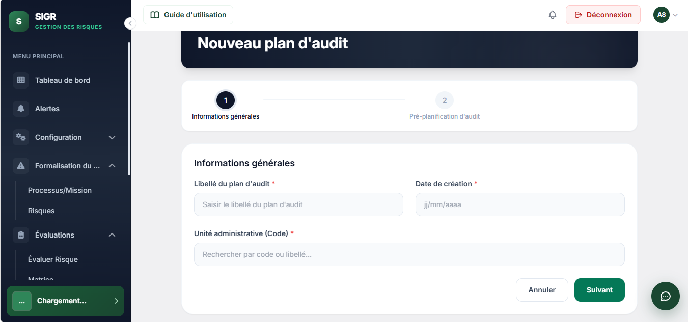
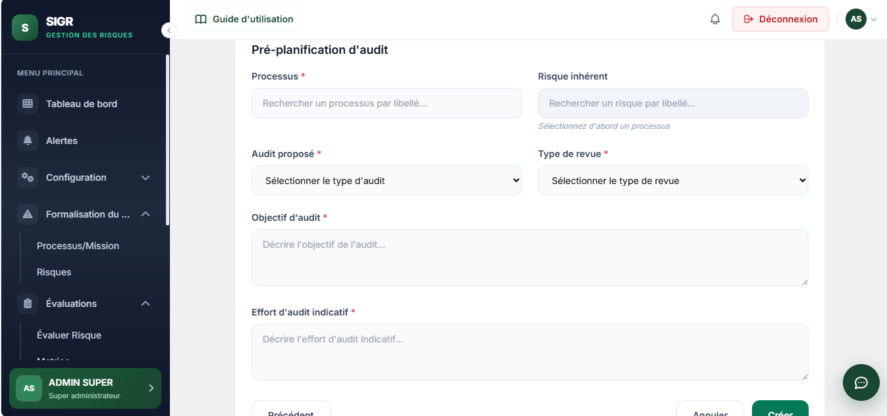
- Cliquez sur le bouton vert « + Nouveau plan d'audit ».
- Dans la section « Informations générales », saisissez le libellé du plan, la date de création et le code de l'unité administrative concernée.
- Dans la section « Pré-planification d'audit », sélectionnez le processus (après avoir choisi l'unité administrative) puis le risque inhérent correspondant.
- Sélectionnez le type d'audit proposé ainsi que le type de revue.
- Renseignez, si besoin, l'objectif d'audit et l'effet d'audit indicatif.
- Cliquez sur « Créer » pour enregistrer le plan d'audit.
Projet de cartographie des risques
Cette page permet de sélectionner les risques à soumettre pour validation, en vue de constituer la cartographie définitive des risques.
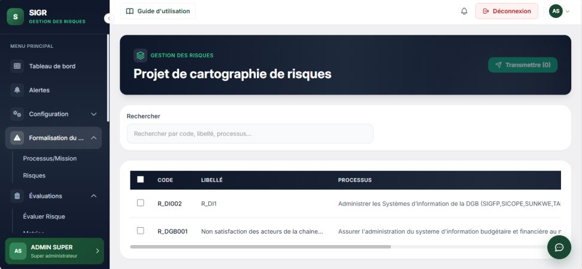
Menu principal / Cartographie des risques / Projet de cartographie de risques — la liste affiche, pour chaque risque, son code, son libellé et le processus concerné. Une case à cocher, en début de ligne, permet de sélectionner un ou plusieurs risques.
- Cochez les risques à soumettre.
- Cliquez sur le bouton « Transmettre » (le nombre entre parenthèses indique le nombre de risques sélectionnés).
Cartographie différée et rejetée
Cette page présente la liste des risques dont la cartographie a été reportée ou rejetée lors du processus de validation.
Un risque peut se retrouver ici lorsque :
- Le valideur a jugé les informations insuffisantes et a demandé un complément avant validation (différé) ;
- Le risque a été jugé non pertinent ou mal formalisé et a été refusé (rejeté).
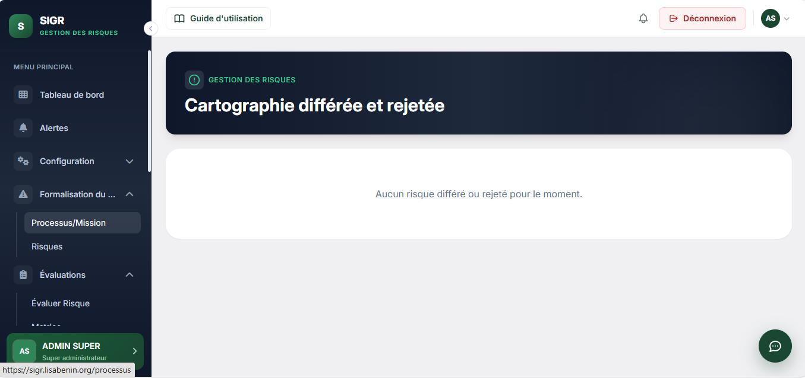
Cartographie validée
Cette page liste l'ensemble des risques dont la cartographie a été validée, c'est-à-dire ceux ayant franchi toutes les étapes de vérification et d'approbation.
Le tableau affiche pour chaque risque :
- Code : identifiant unique du risque (ex. R_DI001) ;
- Libellé : intitulé décrivant le risque ;
- Processus : le processus ou la mission auquel le risque est rattaché.
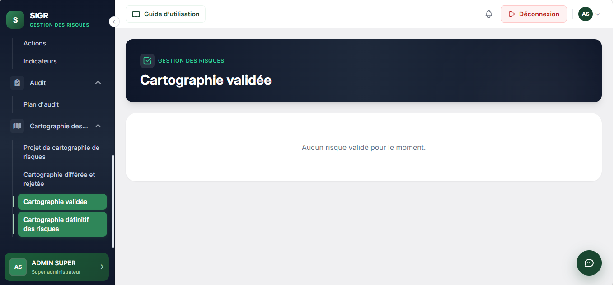
Cartographie définitive des risques
Une fois les risques transmis, cette page permet de suivre leur validation et de consulter la cartographie définitive des risques de l'organisation.
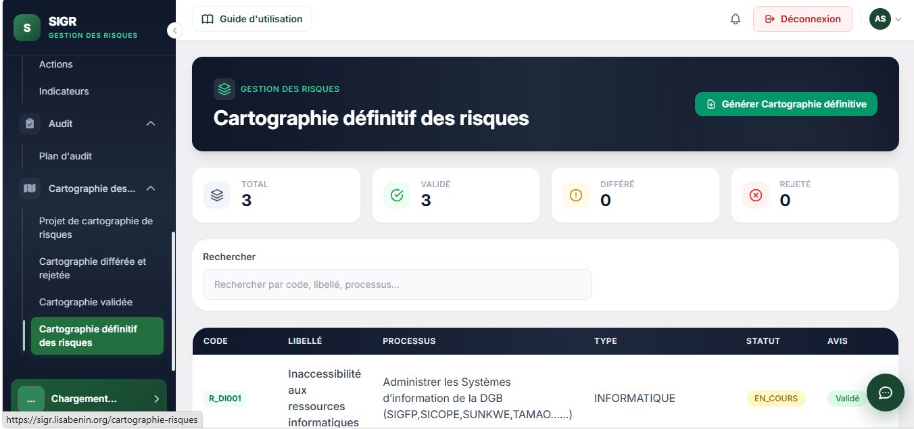
Menu principal / Cartographie des risques / Cartographie définitive des risques — en haut de la page, des compteurs indiquent le nombre total de risques ainsi que leur répartition selon l'avis rendu : Validé, Différé, Rejeté.
La liste affiche, pour chaque risque, son code, son libellé, le processus concerné, son type, son statut et l'avis rendu (Validé, Différé ou Rejeté). Le bouton « voir détails » permet de consulter la fiche complète du risque.
Le bouton « Cartographie définitive » en haut à droite permet de générer le document final de la cartographie.
↑ Retour au sommaire